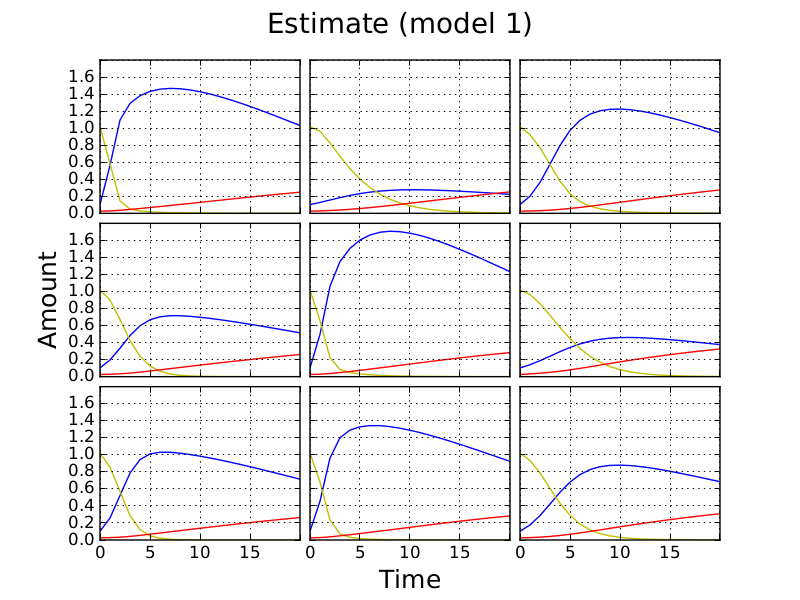
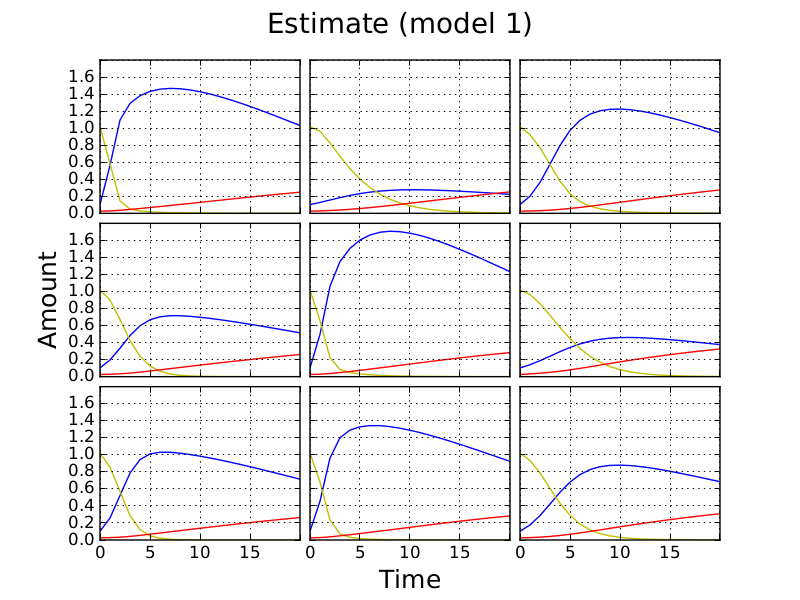
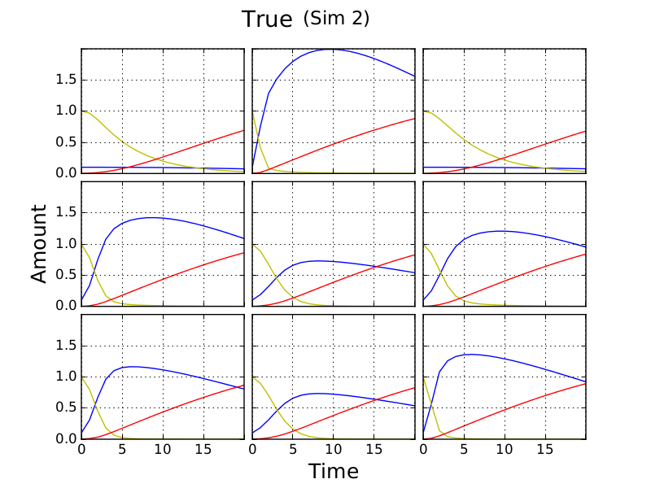
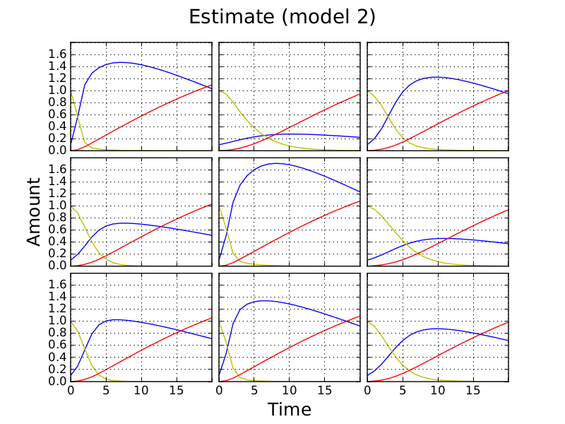

Least squares fit of simulated time-courses
Outline
Here I look at least squares fits of the CANS model to simulated CANS data. I do this for two simulations of a 3x3 plate. In the first all cultures have non-zero growth constants (ri); in the second some of the cultures have zero growth constant. Of the three curves plotted, only the amount of cells (blue) is used to recover parameters. Simulations contain 21 time-points. This is an attempt to keep fitting relevent to the data we will be using.
In the simulations rate constants are drawn from a N(1, 1) distribution. I set other parameters manually.
I compare the perfomance of two fitting approaches. The first allows constants for the secretion of signal by cells \((\beta)\) and the effect of signal on cells \((\alpha)\) to vary beteen cultures; the second does not.
The fixing of other parameters is sumarised below.
Plate level:
- C(t=0) - Initial cell amount
- N(t=0) - Initial nutrient amount
- S(t=0) - Initial signal amount
- kn - Nutrient diffusion constant
- ks - Signal diffusion constant
Culture level:
- ri - Growth constants
Culture level alpha and beta
 
Insert tables with deviations here

Plate level alpha and beta

Discussion
Fits are better for plate level \(\alpha\) and \(\beta\).
If one or more cultures on a plate has a zero growth constant (r), then fits are worse.
This may not be the case for different parameters (particularly ks).
We should also compare how well the independent model recovers rate constants.
Comments